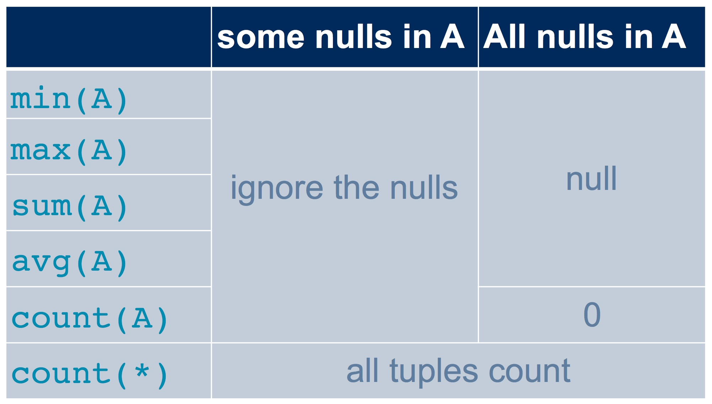
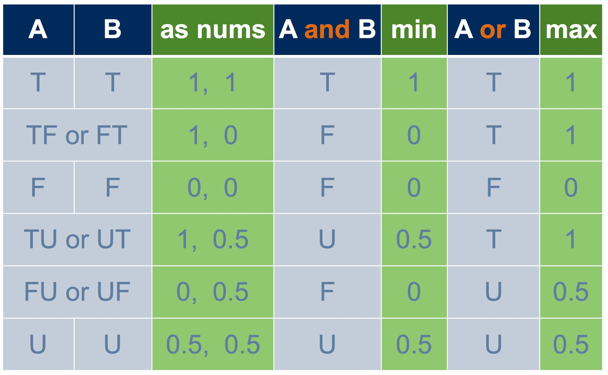

In a real database, we may have some missing information. For example, suppose we had a spouse column in the Student table. What should we put in this column for students who are not married? This isn’t actually a case of missing information, it is a case of bad schema design! Since many or most students are not married, it doesn’t make sense to have a column for spouses in the Student table. Instead, we can put it in another table with this schema (boldface is used to indicate that attributes student1 and student2 together form a key):
Married(student1, student2)
Only students who actually are married would appear in this table.
Sometimes we really do have missing information. For example, not every student has a spouse, but every student does belong to a specific campus. But suppose we have someone in the Student table whose campus we don’t know. There is a correct campus value for this student, we just don’t know it. What value should we put there?
In SQL, we use a special value called NULL.
We can get a NULL value into a table with INSERT INTO. Recall the Student table:
csc343h-prof=> SELECT *
csc343h-prof-> FROM Student;
sid | firstname | surname | campus | email | cgpa
-------+-----------+------------+--------+-----------+------
99132 | Avery | Marchmount | StG | avery@cs | 3.13
98000 | William | Fairgrieve | StG | will@cs | 3.90
99999 | Afsaneh | Ali | UTSC | aali@cs | 2.98
157 | Leilani | Lakemeyer | UTM | lani@cs | 3.42
11111 | Homer | Simpson | StG | doh@gmail | 0.40
(5 rows)Here we insert a student with no value for first name or campus:
If we don’t want to allow NULL values in a given column, we can prevent them by using a NOT NULL constraint in the table definition. (We’ll learn about table definitions a little later.) In fact, our schema was written so that NULL is not permitted in either column firstname or campus, so this insertion is unsuccessful.
We can compare a value to NULL using IS NULL. In our schema, the breadth column in table Course allows NULL values, so this query may yield some results:
csc343h-prof=> SELECT *
csc343h-prof-> FROM Course
csc343h-prof-> WHERE breadth IS NULL;
cnum | name | dept | breadth
------+--------------------------------+------+---------
100 | CSC for future prime ministers | CSC |
(1 row)Notice that the NULL value in column breadth is presented in the output as whitespace.
We can also compare a value to NULL using IS NOT NULL:
csc343h-prof=> SELECT *
csc343h-prof-> FROM Course
csc343h-prof-> WHERE breadth IS NOT NULL;
cnum | name | dept | breadth
------+---------------------------+------+---------
343 | Intro to Databases | CSC | f
207 | Software Design | CSC | f
148 | Intro to Comp Sci | CSC | f
263 | Data Struct & Anal | CSC | f
320 | Intro to Visual Computing | CSC | f
200 | Intro Archaeology | ANT | t
203 | Human Biol & Evol | ANT | f
150 | Organisms in Environ | EEB | f
216 | Marine Mammal Bio | EEB | f
263 | Compar Vert Anatomy | EEB | f
110 | Narrative | ENG | t
205 | Rhetoric | ENG | t
235 | The Graphic Novel | ENG | t
200 | Environmental Change | ENV | f
320 | Natl & Intl Env Policy | ENV | f
220 | Mediaeval Society | HIS | t
296 | Black Freedom | HIS | t
222 | COBOL programming | CSC | f
(18 rows)Because of the possible presence of NULL values, sometimes we don’t know if a condition is true or false! For example, consider:
If we have a row with a NULL value for campus, we cannot determine whether or not it is StG. In SQL, if one or both operands is NULL, a comparison evaluates to “unknown”.
Let’s look at the implications of having this third truth-value.
WHERE is picky: it will not include a row for which the truth-value of the WHERE clause is unknown. So in our example above, if we didn’t know a student’s campus, they would not be included in the result of the query.
NATURAL JOIN is picky also. You can remember this if you think of a natural join as being a Cartesian product followed by a WHERE condition.
When we aggregate on a column, for example to find the average, NULL values in that column are ignored:
NULL never contributes to a sum, avg, or countNULL makes no difference to the max or min of a column, unless every value is NULL. In that case, both the max and the min are NULL.Here’s a summary:

Let’s look at an example that uses this table about students at Runnymede Public School:
csc343h-prof=> -- Column grade has one NULL,
csc343h-prof=> -- and column age is entirely NULLS.
csc343h-prof=> SELECT *
csc343h-prof-> FROM Runnymede;
name | age | grade
-------+-----+-------
diane | | 8
will | | 8
cate | | 1
tom | |
micah | | 1
grace | | 2
(6 rows)Tom’s NULL grade doesn’t contribute to any of the aggregations below. But count(*) counts rows, and it includes every row, regardless of any NULLs.
csc343h-prof=> SELECT min(grade), max(grade), sum(grade), avg(grade),
csc343h-prof=> count(grade), count(*)
csc343h-prof-> FROM Runnymede;
min | max | sum | avg | count | count
-----+-----+-----+--------------------+-------+-------
1 | 8 | 20 | 4.0000000000000000 | 5 | 6
(1 row)If an entire column is NULL, it can’t have a meaningful avg, for example. The value of any aggregation on that column is NULL. There is one exception: the COUNT of such a column is 0. Let’s aggregate on our entirely NULL column, age.
csc343h-prof=> SELECT min(age), max(age), sum(age), avg(age),
csc343h-prof=> count(age), count(*)
csc343h-prof-> FROM Runnymede;
min | max | sum | avg | count | count
-----+-----+-----+-----+-------+-------
| | | | 0 | 6
(1 row)Notice that count(*) gave the same answer as before. and that count(age) gave 0 because no values in that column are non-null.
There are corner cases that we haven’t examined. For example, are two NULL values considered distinct from each other when we do NATURAL JOIN, set operations, or SELECT DISTINCT? This behaviour may vary across DBMSs, so it is best not to assume you know what will happen. Check the documentation.
Now that we have three truth-values, we have to know what happens when we use logical operators in a boolean condition. The truth tables below specify the truth-value for each operator in each of the possible conditions.
The values in the “and”, “or”, and “not” columns above are common sense if you think about it.
Here’s another way to look at three-valued logic. If we treat true as 1, false as 0, and unknown as 0.5, then taking the minimum of two operands gives us “and”, and taking the maximum gives us “or”:

Taking the complement of an operand, gives us “not”:
Recall our Course table:
csc343h-prof=> SELECT *
csc343h-prof=> FROM Course;
cnum | name | dept | breadth
------+--------------------------------+------+---------
343 | Intro to Databases | CSC | f
207 | Software Design | CSC | f
148 | Intro to Comp Sci | CSC | f
263 | Data Struct & Anal | CSC | f
320 | Intro to Visual Computing | CSC | f
200 | Intro Archaeology | ANT | t
203 | Human Biol & Evol | ANT | f
150 | Organisms in Environ | EEB | f
216 | Marine Mammal Bio | EEB | f
263 | Compar Vert Anatomy | EEB | f
110 | Narrative | ENG | t
205 | Rhetoric | ENG | t
235 | The Graphic Novel | ENG | t
200 | Environmental Change | ENV | f
320 | Natl & Intl Env Policy | ENV | f
220 | Mediaeval Society | HIS | t
296 | Black Freedom | HIS | t
222 | COBOL programming | CSC | f
100 | CSC for future prime ministers | CSC |
(19 rows)Here, we ask for the courses that either have breadth true or have breadth false:
csc343h-prof=> SELECT *
csc343h-prof-> FROM Course
csc343h-prof-> WHERE breadth OR NOT breadth;
cnum | name | dept | breadth
------+---------------------------+------+---------
343 | Intro to Databases | CSC | f
207 | Software Design | CSC | f
148 | Intro to Comp Sci | CSC | f
263 | Data Struct & Anal | CSC | f
320 | Intro to Visual Computing | CSC | f
200 | Intro Archaeology | ANT | t
203 | Human Biol & Evol | ANT | f
150 | Organisms in Environ | EEB | f
216 | Marine Mammal Bio | EEB | f
263 | Compar Vert Anatomy | EEB | f
110 | Narrative | ENG | t
205 | Rhetoric | ENG | t
235 | The Graphic Novel | ENG | t
200 | Environmental Change | ENV | f
320 | Natl & Intl Env Policy | ENV | f
220 | Mediaeval Society | HIS | t
296 | Black Freedom | HIS | t
222 | COBOL programming | CSC | f
(18 rows)The expression breadth OR NOT breadth is a tautology, meaning it should always be true, yet we can see that this tautology isn’t true for the course “CSC for future prime ministers” – this course does not appear in the result!
This is a bit of a surprise, but it makes sense when we remember the truth table for OR:
breadth is unknown.NOT breadth is unknown.OR of two unknowns is unknown.Here’s another tautology: AGE >= 10 OR AGE < 10. But it’s not true if AGE is NULL. Here’s a little table that we can use to demonstrate this:
csc343h-prof=> SELECT *
csc343h-prof-> FROM Ages;
name | age
--------+-----
Amna | 21
Zach | 25
Miriam |
Ben | 0
(4 rows)
csc343h-prof=> SELECT *
csc343h-prof-> FROM Ages
csc343h-prof-> WHERE age >= 10 OR AGE < 10;
name | age
------+-----
Amna | 21
Zach | 25
Ben | 0
(3 rows)Miriam is not included in the result because her age is not known. Even though AGE >= 10 OR AGE < 10 would evaluate to true no matter what value we inserted for her age, the expression evaluates to unknown right now.
Here’s one final tautology, and this time it doesn’t involve any logical operators: AGE * 0 = 0. This mathematical rule would be true for any value of AGE, but it is not true in SQL when AGE is NULL, and so Miriam is again excluded:
csc343h-prof=> SELECT *
csc343h-prof-> FROM Ages
csc343h-prof-> WHERE AGE * 0 = 0;
name | age
------+-----
Amna | 21
Zach | 25
Ben | 0
(3 rows)There are many corner conditions involving NULL, but you need only remember these core facts:
NULL yields the truth-value unknownWHERE is picky: it only accepts TRUE.NATURAL JOIN is picky also.NULL values.NULL or where it matters whether or not two NULL values are considered equal, don’t assume what the behaviour will be: check the documentation for your particular DBMS and test your code! And be aware that your code may not be portable to another DBMS.